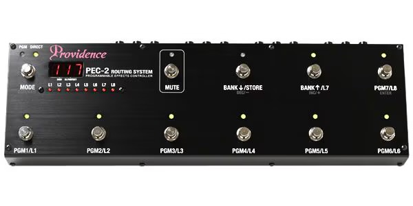
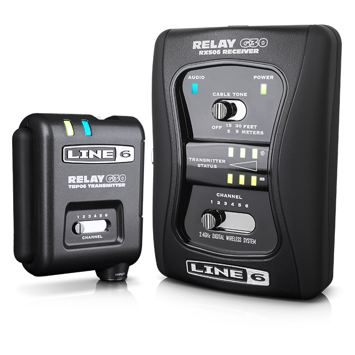
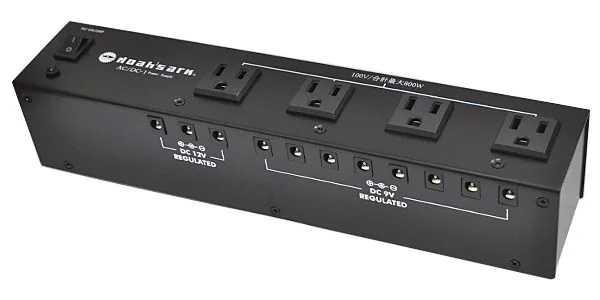
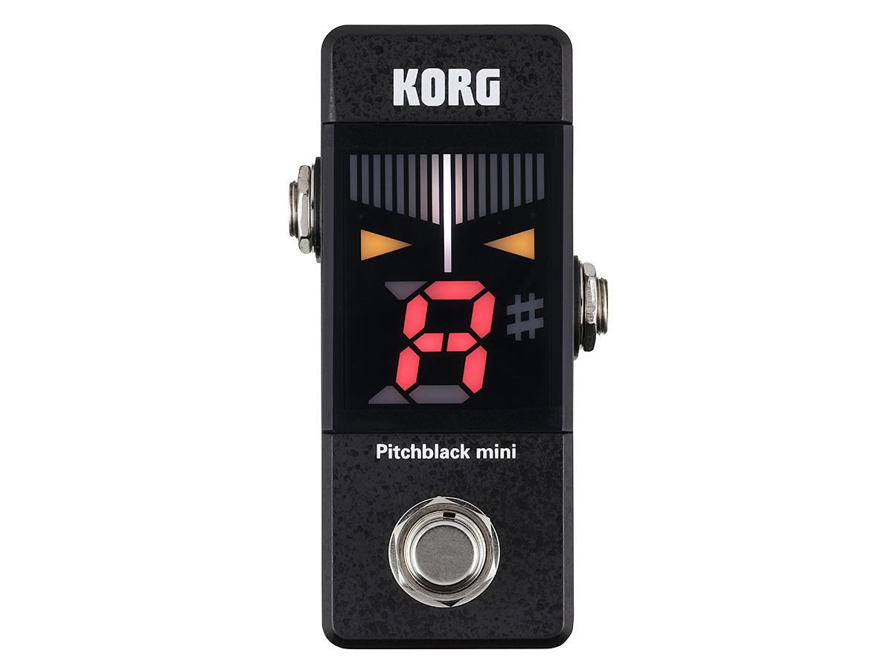
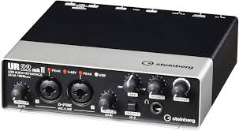
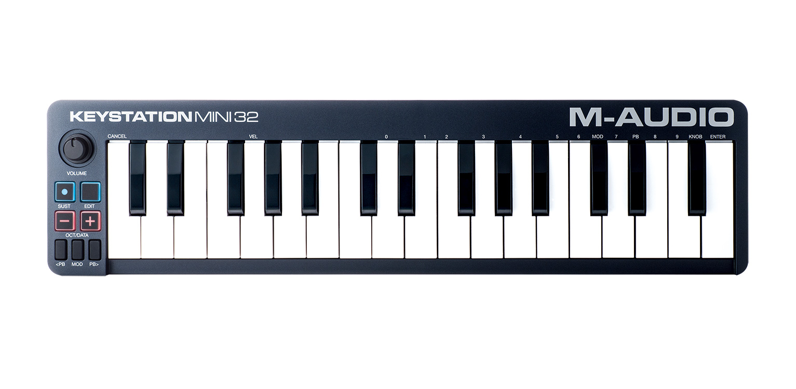

音楽を支える名脇役達
Others
Providence/PEC-2

Providence/PEC-2
Providence PEC-2は、高機能なプログラマブル・エフェクト・コントローラーです。多数のエフェクターを集中管理し、複雑な音色切り替えを瞬時に行えます。
LINE6/Relay G30

LINE6/Relay G30
LINE6 Relay G30は、コンパクトなギター用ワイヤレスシステムです。ケーブルの制約から解放され、ステージ上での自由なパフォーマンスを可能にします。
Noah's Ark/AC/DC-1

Noah's Ark/AC/DC-1
Noah's Ark AC/DC-1は、多機能なパワーサプライです。複数のエフェクターへ安定した電源を供給し、ノイズの少ないクリアなサウンドを実現します。
KORG/Pitch Black

KORG/Pitch Black
KORG Pitchblackは、高精度なチューニングが可能なペダルチューナーです。視認性の高いディスプレイと堅牢なボディで、ステージでの信頼性も抜群です。
minimichine

minimichine
minimichineは、個性的なハンドメイドエフェクターを製作するブランドです。このジャンクションボックスは、ペダルボードの入出力を整理し、配線をスマートにします。
Steinberg/UR22mk2

Steinberg/UR22mk2
Steinberg UR22mkIIは、高音質なレコーディングが可能なUSBオーディオインターフェースです。コンパクトながらプロクオリティのサウンドを実現し、DTM環境の中核を担います。
m-audio/keystation mini32mk3

m-audio/keystation mini32mk3
M-Audio Keystation Mini 32 MK3は、コンパクトなUSB MIDIキーボードコントローラーです。持ち運びにも便利で、DAWソフトでの音楽制作を手軽に始められます。